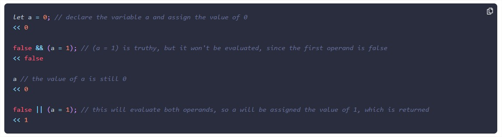

WDD 330 Week 02
Notes and questions:
Chapter 2: Programming Basics
Lazy Evaluation Example
I didn't understand why is truthy a = 1, because before we declare a variable and assigned the value 0. Why is turthy them?
I didn't understand why is truthy a = 1, because before we declare a variable and assigned the value 0. Why is turthy them?